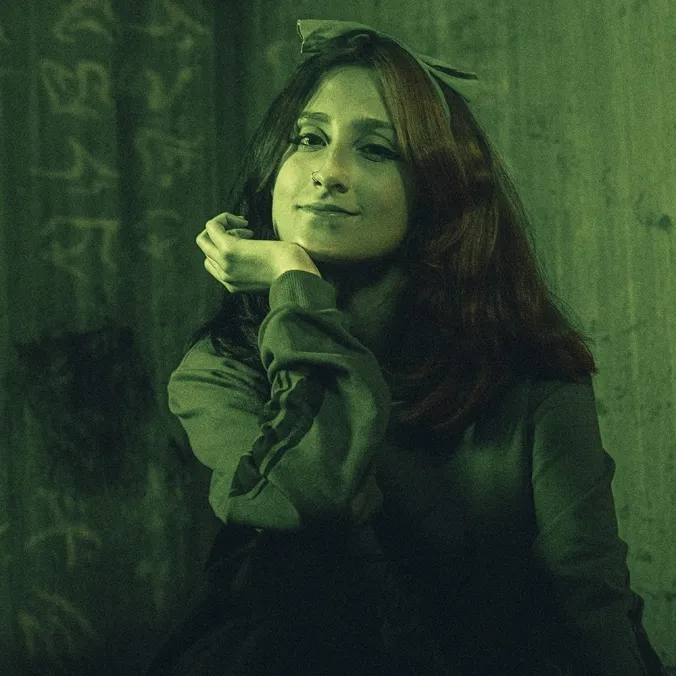
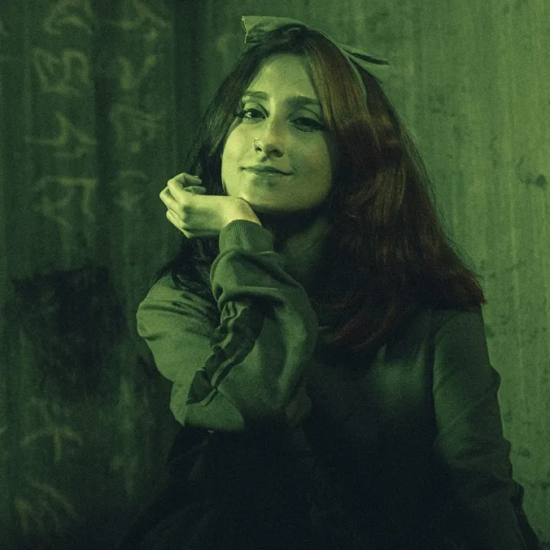
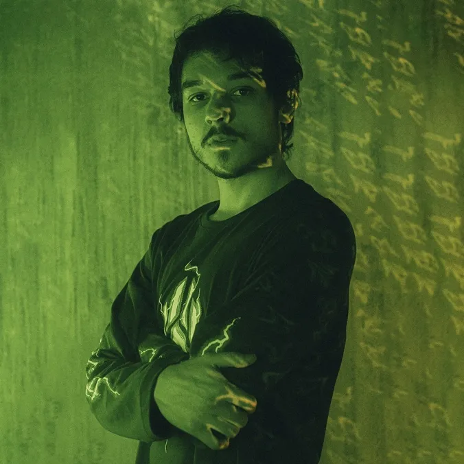
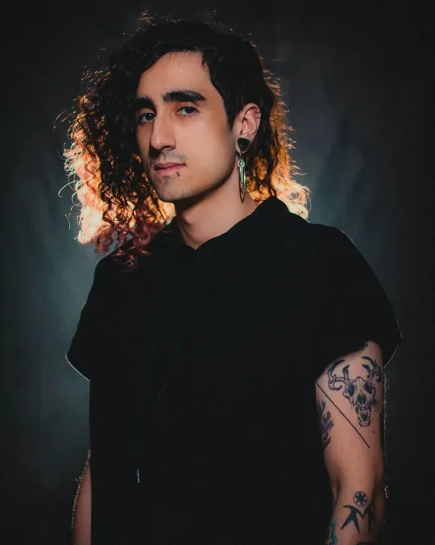
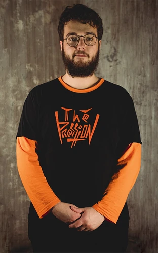
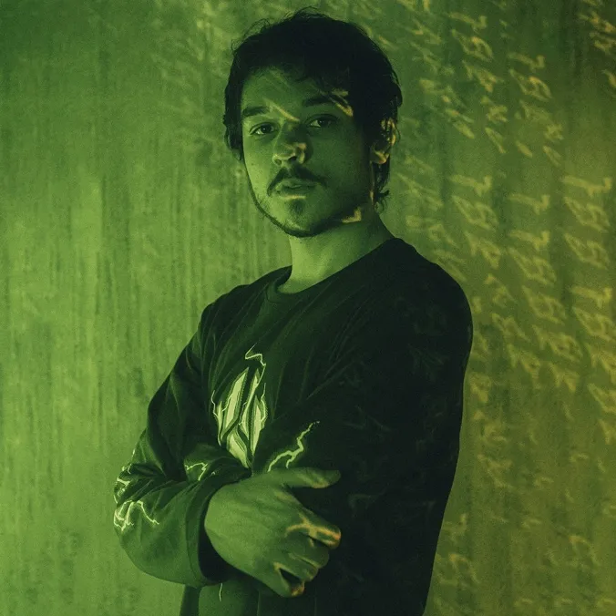
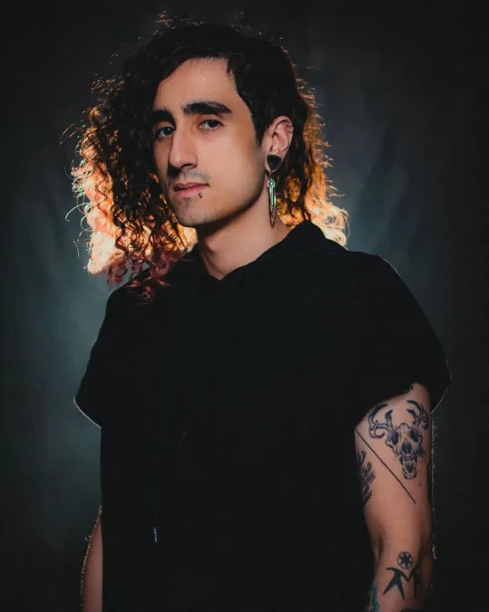
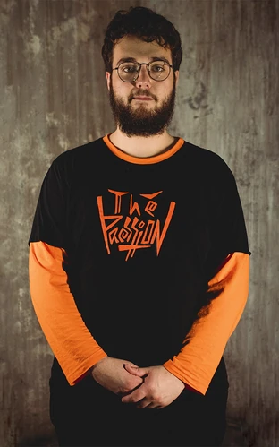

Sinais do Outro Lado é a segunda campanha spin-off da série Ordem Paranormal. É uma campanha de RPG de mesa baseada no sistema Ordem Paranormal RPG. Mestrada pelo streamer, diretor criativo e roteirista de Enigma do Medo, Cellbit, é protagonizada por Alexandre, Chico Albuquerque, Dara Venturini, Guilherme Santos e Lirio Tellini.
O paranormal não vem para a nossa realidade de maneira fácil, mas as coisas nem sempre foram assim. O ano de 1997 é palco de vários casos de desaparecimento no sul de Minas Gerais, em uma granja localizada na cidade de Varminho. O grupo "Os Cinco", formado por Alexandre, Chico Albuquerque, Dara Alice Venturini, Guizo e Lírio Tellini, investiga o desaparecimento de seu mentor, Morato Vertaler, um caçador paranormal que tem inúmeras pesquisas sobre os Alheios, criaturas misteriosas e perigosas. Porém, algo ou alguém mais poderoso e desconhecido pode estar por trás de tudo isso.
 


 




